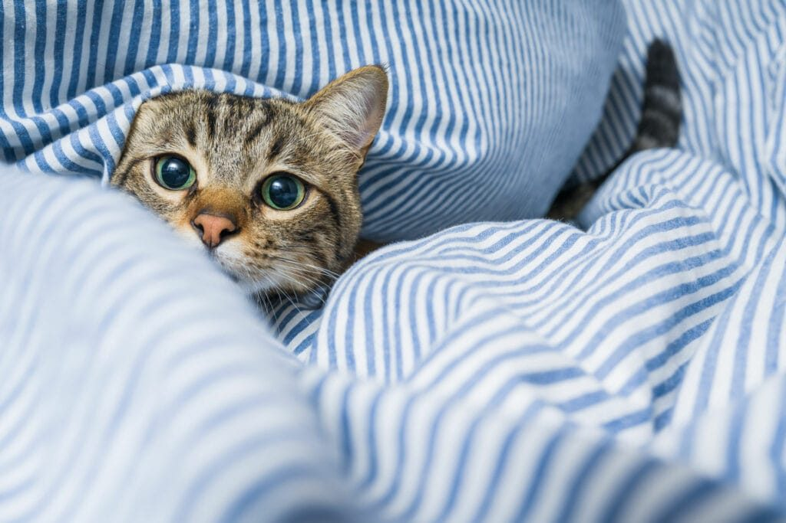

Röntgen
Bildgebung für Skelett, Thorax und Abdomen.
Leistungen
Die Praxis am westlichen Rand von Wien ist klein – die Ausstattung ist es nicht. Befunde entstehen im Haus, Eingriffe werden planbar vorbereitet und nachbetreut.
Diagnose
Top-Diagnose und modernste Vorsorge: Die Praxis verfügt über Röntgen, ein eigenes Blutlabor, Ultraschall und Endoskopie. Das bedeutet für Sie kurze Wege – Untersuchung, Befund und Besprechung passieren im selben Haus.
Bildgebung für Skelett, Thorax und Abdomen.
Laborwerte aus dem Haus – auch vor einer Narkose.
Schnittbilder von Organen und Weichteilen.
Minimalinvasive Untersuchung und Chirurgie, etwa bei der Kastration der Hündin.

Dermatologie
„Warum hat mein Haustier Haut- oder Ohrenprobleme?“ ist eine der häufigsten Fragen im Wartezimmer. Die Hautambulanz des Tierarzt Wien West wird von Dr. Maurizio Colcuc geführt, Fachtierarzt für Dermatologie und Vorsitzender der Prüfungskommission für Fachtierärzte Dermatologie.
Ein Beispiel aus der Praxis: Starke Wucherungen der Haut am Eingang zum Gehörgang führten bei der Chihuahua-Hündin Neomi zu einer eitrigen Ohrenentzündung – und dazu, dass sie die Nachbarn im Stiegenhaus nicht mehr meldete.
Typische Vorstellungsgründe: anhaltender Juckreiz, Haarausfall, wiederkehrende Ohrenentzündungen, Veränderungen der Haut. Zum Fallbericht im Ratgeber
Kurznasige Rassen
Kurznasige (brachycephale) Rassen brauchen besondere Aufmerksamkeit – bei der Untersuchung, bei der Planung von Eingriffen und vor allem rund um die Narkose. Die Praxis führt diesen Bereich als eigenen Schwerpunkt.
Sprechen Sie uns an, wenn Sie eine Mops-, Französische-Bulldoggen- oder Perserkatzen-Familie zu Hause haben und einen Eingriff planen.
Orthopädie
Der Kreuzbandriss gehört zu den häufigsten orthopädischen Diagnosen beim Hund. Diagnose und Behandlung gehören zum Leistungsspektrum der Praxis.
Wichtig zu wissen: Kastrierte Hündinnen neigen laut Literatur zu altersbedingten Kreuzbandrissen, insbesondere wenn sie sehr früh operiert wurden. Genau deshalb beraten wir vor jeder Kastration über den passenden Zeitpunkt.
Sicherheit
Das Wort Narkose löst Unbehagen aus. Wenn das geliebte Haustier eine Narkose braucht, entstehen Sorgen. Im Interview sprechen Dr. Maurizio Colcuc und Narkose-Assistentin Valentina Sagmeister darüber, was sichere Narkose bei Tieren bedeutet.
Zur Vorbereitung gehören klinische Untersuchung, Laborwerte aus dem eigenen Blutlabor und eine klare Nüchternregel: Ab 22:00 Uhr am Vorabend kein Futter mehr, Wasser bleibt verfügbar. Kaninchen, Meerschweinchen und Nagetiere werden am Operationstag hingegen gefüttert.
Begleitung
Der schwerste Termin im Leben einer Tierhalterin oder eines Tierhalters. Wir nehmen uns dafür Zeit – in ruhiger Atmosphäre, ohne Hetze, mit Raum für den Abschied.
Rufen Sie uns an, wenn Sie darüber sprechen möchten: +43 1 577 43 00.